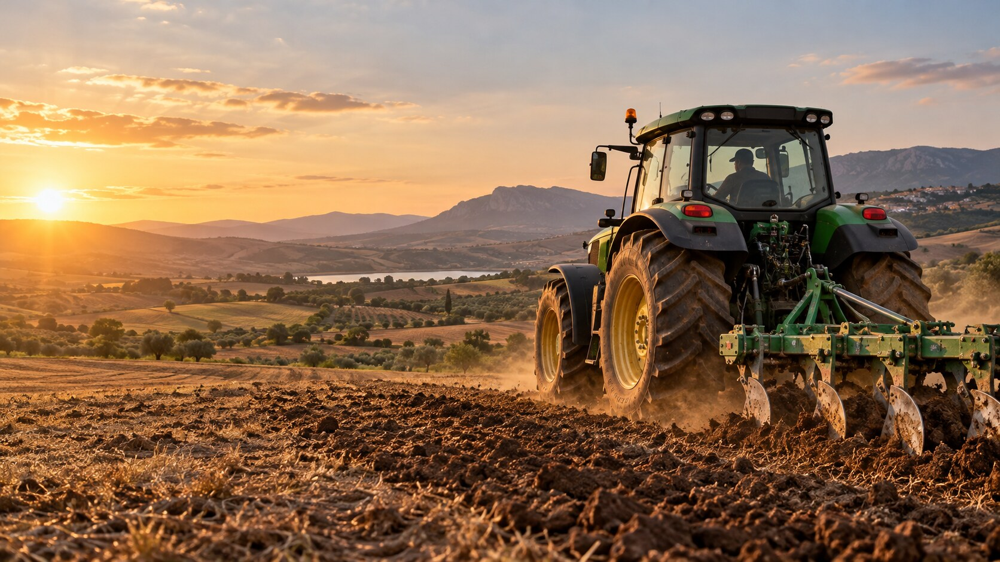

Compatibility first
We ask for model details, OEM references and dimensions before suitability is confirmed.
BEYOND THE PART NUMBER
An export-focused approach to agricultural machinery parts.

ROOTED IN AGRICULTURE
WLF Agri Parts is being built around one idea: make it easier for agricultural businesses to start the right parts conversation.
Our focus is B2B enquiries for tractor, harvester and soil working components. We bring machine details, references and export requirements together in one clear request.
Explore the parts catalogueWHAT GUIDES THE CONVERSATION
We ask for model details, OEM references and dimensions before suitability is confirmed.
Quantities, requirements and delivery destinations belong in the same conversation.
Export terms, packaging and documentation are discussed for each order individually.
YOUR NEXT SEASON STARTS WITH A CONVERSATION